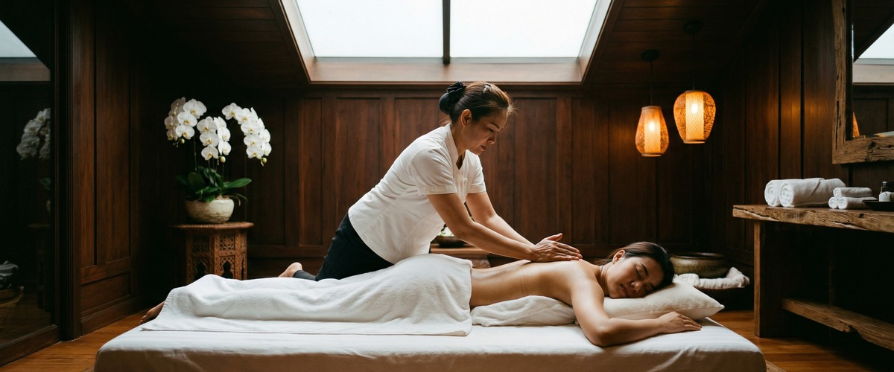
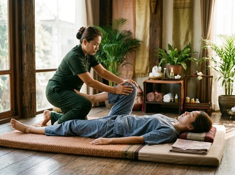
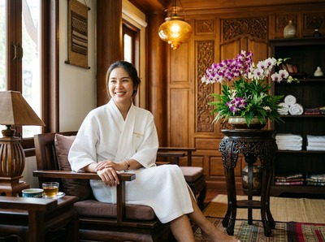

★★★★★ Quality gate failures: rewrite_api_error. Review and edit before removing this notice. ★★★★★
If you've ever left a Thai massage session feeling taller, looser, and somehow both deeply relaxed and quietly energised all at once, the stretching is why.

Thai yoga massage — sometimes called "passive yoga" or "lazy person's yoga" — is a system of assisted stretching and acupressure. It works your whole body without you lifting a finger. At Glasgow Thai Massage, these techniques form the foundation of every traditional Thai massage session. Understanding how they work helps explain why this practice has endured for centuries.
In a standard stretch, you're the one doing the work. You reach, hold, breathe, and try not to wobble. Thai yoga massage turns that around entirely.

Your therapist moves your body through a series of assisted stretches. They use their hands, forearms, feet, and bodyweight to guide you into positions you couldn't hold on your own. This is why it's called passive yoga — you stay relaxed while the therapist does the work.
Because your muscles aren't bracing to hold a position, they let go more easily than they would in active stretching. The result is a deeper, more sustained opening across joints and connective tissue. Sessions at Glasgow Thai Massage are done on a floor mat, not a massage table. Floor work gives the therapist leverage and range that simply isn't possible on a raised surface.
One of the most satisfying stretches in Thai yoga massage is the supine spinal twist. You lie on your back, and your therapist gently guides one knee across your body while holding your shoulder steady. This creates a slow rotation through the lower and mid spine.
It takes pressure off the vertebrae and releases the muscles that run alongside them. It often produces that satisfying click that tells you something has genuinely shifted. This technique is especially useful for people who sit at a desk for long hours. Prolonged sitting compresses the discs in your lower back and tightens the muscles around the hips and spine. A spinal twist addresses the root of that tightness — not just the surface. You can book a session online if that description sounds exactly like your working week.
The hips are where many people hold their deepest tension. Thai yoga massage gives this area serious attention. Seated and lying-down hip openers rotate the thigh outward while the therapist applies gentle, supported pressure to help the joint release.
An inner thigh and groin stretch — one leg extended, one bent — works the inner thigh and hip flexors at the same time. These stretches connect directly to posture and lower back health. When the hip flexors are tight, they pull on the lower spine and tilt the pelvis forward. That's a common cause of persistent back discomfort — and it's something no heat pack or painkiller can fix. For more on how Thai massage supports lower back pain, the back pain treatment page on our main site gives a good overview.
Upper back and shoulder tension is where most Glasgow office workers carry their stress. Thai yoga massage has a precise set of techniques for it. A common sequence involves lying on your side while the therapist works through a shoulder spiral — gentle traction of the arm, rotation at the shoulder joint, and a gradual opening of the chest.
The cobra-inspired back bend is another technique used in traditional Thai massage to open the front of the body. You lie face down, and the therapist gently lifts your shoulders while keeping your lower back stable. This creates extension through the mid and upper spine. People who've spent years hunching over a keyboard often describe this as the stretch they didn't know they desperately needed.
Thai yoga massage is not a random set of stretches. Each movement follows the sen lines — the body's energy pathways that run from the soles of the feet to the crown of the head. Maliwan at Glasgow Thai Massage trained in the Wat Pho tradition, and she uses these lines to shape each session into a logical, connected flow.

Acupressure along the sen lines is applied before each stretch. It releases surface tension so the assisted movement can reach deeper. This combination of point work and stretching is what sets traditional Thai massage apart from a simple flexibility session. It treats the body as a connected system — not just a single muscle in isolation.
Whether you're recovering from a sports injury, managing tension from desk work, or simply want to move better, Thai yoga massage offers something that rest or solo exercise rarely does: skilled, attentive, whole-body care. It's worth experiencing in person to understand why.
Not at all. Thai yoga massage is adapted to your current range of motion. A skilled therapist works within your body's natural limits and gently extends them over time — never forcing a position. Clients with very limited flexibility often benefit the most.
The terms are often used interchangeably. Traditional Thai massage includes assisted stretching and acupressure along the sen energy lines — which is exactly what Thai yoga massage describes. The "yoga" in the name refers to the yoga-like assisted poses, not a separate practice. At Glasgow Thai Massage, our traditional Thai massage sessions include these stretching techniques as standard.
Thai yoga massage should not be painful. You may feel deep pressure, a strong stretch, or mild discomfort in very tight areas. A good therapist adjusts throughout based on your feedback. Always speak up if something feels sharp or wrong. The aim is release, not strain.
Thai yoga massage is done on a floor mat, fully clothed, without oils. Working on the floor gives the therapist the leverage needed for the full range of assisted stretches and postural work. Many of the hip, spinal, and shoulder techniques simply cannot be done effectively on a raised table.
For a noticeable improvement in flexibility and joint mobility, most people benefit from weekly or fortnightly sessions over the first six to eight weeks. After that, a monthly session helps maintain the gains. Your therapist can advise on a schedule based on how your body responds. You can book your first appointment online to get started.